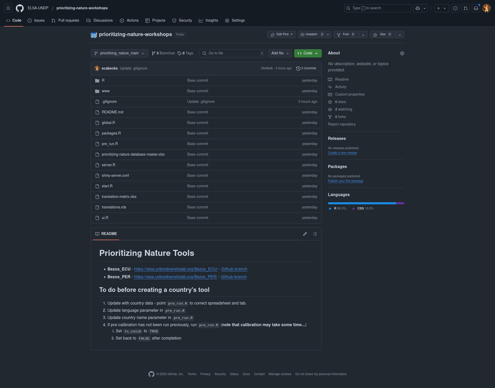

Repositorios de Código (git & GitHub)
Las múltiples variaciones de las herramientas web ELSA, Protecting Nature y otras relacionadas se gestionan como ramas separadas (piensa en las ramas como derivaciones sutiles de un proyecto principal, donde hay elementos comunes pero también diferencias más pequeñas y específicas) dentro de un único repositorio de código con control de versiones alojado en GitHub. Puede que estés familiarizado o no con git (u otro software de control de versiones), pero, como su nombre indica, git es un sistema de control que rastrea cambios en el código, documentos, etc., y permite que varias personas colaboren, añadan nuevas funcionalidades, combinen cambios y reviertan modificaciones de manera eficiente, manteniendo siempre un historial de cambios que evita conflictos y permite volver a versiones anteriores cuando sea necesario. Esta configuración permite una gestión simplificada y el desarrollo de funcionalidades compartidas entre herramientas, al mismo tiempo que posibilita el desarrollo personalizado de herramientas específicas para cada proyecto y país, adaptándose a diferencias en el idioma, las traducciones y las especificaciones de los datos de entrada.
El repositorio público de Protecting Nature Webtools, utilizado en estos talleres, está disponible en:
Descargar - Repositorio de GitHub de Protecting Nature Webtools
Nota
No necesitas estar registrado en GitHub ni estar familiarizado con GitHub para acceder a este repositorio.
Si accedes a la URL anterior, deberías ver lo siguiente (o algo similar):
{kind=link}
Importante
Para el resto de este entrenamiento, asumiremos que no tienes experiencia usando git o GitHub, y te mostraremos cómo descargar el código del repositorio sin necesidad de usar git.
Para los usuarios que están familiarizados con git y GitHub, siéntanse libres de clonar el repositorio en su computadora.
En el repositorio existen tres (3) ramas de las Protecting Nature Webtools:
prioritizing_nature_main (rama principal de desarrollo)
prioritizing_nature_per (the branch for the Peru specific tool)
prioritizing_nature_ecu (the branch for the Ecuador specific tool)
En cualquier momento estarás trabajando con la herramienta para Perú o la herramienta para Ecuador (dependiendo de tu preferencia, por supuesto). Para hacerlo, primero debes descargar la rama del repositorio correspondiente a tu país de preferencia en formato ZIP. Para seleccionar la rama de tu elección:
Haz clic en el menú desplegable que (por defecto) muestra
prioritizing_nature_main.Selecciona la rama
prioritizing_nature_ecuoprioritizing_nature_per.
{kind=link}
Una vez que hayas seleccionado la rama deseada:
Haz clic en la caja a la derecha que muestra
<> Code(visible en verde en la imagen a continuación).
Nota
El botón <> Code puede tener otro color si usas un tema diferente en tu navegador.
{kind=link}
Haz clic en el icono
Download ZIP.
Las descargas de las ramas para Ecuador y Perú son de aproximadamente 7MB y 37MB, respectivamente.
Importante
- ¿Por qué la gran diferencia de tamaño, te estarás preguntando?
Perú es más grande (lo que significa más unidades de planificación) y (más significativamente) tiene más capas de datos de entrada.
Datos Geoespaciales
The repositories (branches) that you just downloaded are as large as they are because they already contain the preprocessed and pre-created data for the feature layers, zones, and existing protected areas and OECMs in each country. We will not be covering the install of Desktop GIS program in this training, but it is easy to explore these geospatial data layers using a Desktop GIS platform (such as QGIS).
Importante
Si no tienes un SIG de escritorio instalado en tu computadora, QGIS es una de las mejores opciones, y además es gratuito y de código abierto. Puedes encontrar instrucciones de descarga e instalación en QGIS.
También ten en cuenta que R puede ser un SIG de escritorio muy potente. El excelente libro Geocomputation with R proporciona toda la información que podrías necesitar.
En la siguiente sección exploraremos cómo está estructurado el directorio de datos del repositorio y dónde puedes encontrar y explorar los datos geoespaciales.